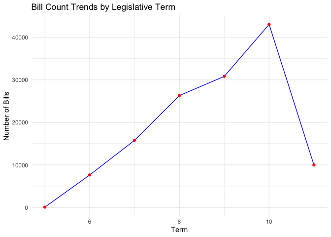
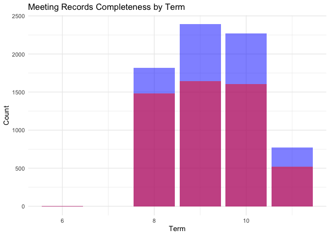

Real-time and Archives of Taiwan Legislative Data in R 
legisTaiwan is designed to streamline access to real-time archives of Taiwan’s legislative data, drawing inspiration from the UK’s TheyWorkForYou API. By providing straightforward access to the Taiwan Legislative Yuan API in R, this package not only aims to enhance legislative accountability and public transparency but also serves as a powerful tool for academic research. Scholars can easily retrieve and analyze legislative data including voting records, parliamentary questions, and bill proposals, facilitating quantitative research and empirical analysis. As the package interfaces directly with Legislative Yuan API endpoints, a stable internet connection is required. Users are welcome to contact the author for any API implementation assistance.
legisTaiwan 套件旨在簡化台灣立法院資料的即時存取，其設計理念來自於英國的 TheyWorkForYou API。透過在 R 環境中提供直接連接立法院開放資料 API 的便捷管道，本套件不僅致力於提升立法問責制和公共透明度，更為學術研究者提供了系統化分析立法數據的工具。研究人員可以輕鬆獲取並分析立法委員的表決紀錄、問政質詢、法案提案等資料，有助於量化研究和實證分析。由於套件需要直接與立法院 API 介接，使用時請確保網路連線穩定。如有任何 API 使用上的問題，歡迎與套件我們聯繫。
Get Started with Using remotes:
install.packages("remotes")
remotes::install_github("davidycliao/legisTaiwan", force = TRUE)Summary Descriptive of Taiwan Legilative Yuan API
Legislative Bills Statistics
analyze_bills(stats)
#>
#> === Bill Statistics Summary ===
#> Total Bills: 132175
#> Last Updated: 2025-01-19 22:19:51
#>
#> First Five Terms Bill Count:
#> term count percentage cumulative
#> 1 11 8648 6.54 8648
#> 2 10 43029 32.55 51677
#> 3 9 30799 23.30 82476
#> 4 8 26292 19.89 108768
#> 5 7 15731 11.90 124499
#> $plot#>
#> $summary
#> term count percentage cumulative
#> 1 11 8648 6.54 8648
#> 2 10 43029 32.55 51677
#> 3 9 30799 23.30 82476
#> 4 8 26292 19.89 108768
#> 5 7 15731 11.90 124499
#> 6 6 7617 5.76 132116
#> 7 5 59 0.04 132175Legislative Meeting Statistics
analyze_meetings(stats)
#>
#> === Meeting Statistics Summary ===
#> Total Meetings: 7128
#>
#> Meeting Records Statistics by Term:
#> term count max_meeting_date meetdata_count 議事錄_count minutes_ratio
#> 1 11 652 2025-02-13 00:00:00 627 445 68.25
#> 2 10 2267 2024-05-17 01:00:00 2146 1602 70.67
#> 3 9 2390 2020-01-22 00:00:00 2237 1614 67.53
#> 4 8 1818 2015-12-18 00:00:00 1434 1468 80.75
#> 5 6 1 <NA> 0 1 100.00
#> last_meeting_date
#> 1 2025-02-13
#> 2 2024-05-17
#> 3 2020-01-22
#> 4 2015-12-18
#> 5 <NA>
#> $plot
#>
#> $summary
#> term count max_meeting_date meetdata_count 議事錄_count minutes_ratio
#> 1 11 652 2025-02-13 00:00:00 627 445 68.25
#> 2 10 2267 2024-05-17 01:00:00 2146 1602 70.67
#> 3 9 2390 2020-01-22 00:00:00 2237 1614 67.53
#> 4 8 1818 2015-12-18 00:00:00 1434 1468 80.75
#> 5 6 1 <NA> 0 1 100.00
#> last_meeting_date
#> 1 2025-02-13
#> 2 2024-05-17
#> 3 2020-01-22
#> 4 2015-12-18
#> 5 <NA>Legislative Video (IVOD) Statistics
analyze_ivod(stats)
#>
#> === Video Statistics Summary ===
#> Total Videos: 89259
#> Data Period: 2005-03-14 to 2025-01-17
#>
#> Video Statistics by Term:
#> term count start_date end_date start_date_fmt
#> 1 11 10234 2024-02-05 07:00:00 2025-01-17 04:10:00 2024-02-05
#> 2 10 33852 2020-02-14 06:00:00 2024-01-09 01:00:00 2020-02-14
#> 3 9 34167 2016-02-19 01:00:00 2020-01-20 01:00:00 2016-02-19
#> 4 8 9608 2012-02-24 01:00:00 2015-12-18 01:00:00 2012-02-24
#> 5 7 1364 2008-02-29 01:00:00 2011-12-14 01:00:00 2008-02-29
#> end_date_fmt period_days avg_daily_videos
#> 1 2025-01-17 346.8819 29.50
#> 2 2024-01-09 1424.7917 23.76
#> 3 2020-01-20 1431.0000 23.88
#> 4 2015-12-18 1393.0000 6.90
#> 5 2011-12-14 1384.0000 0.99
#> $plot
#>
#> $summary
#> term count start_date end_date start_date_fmt
#> 1 11 10234 2024-02-05 07:00:00 2025-01-17 04:10:00 2024-02-05
#> 2 10 33852 2020-02-14 06:00:00 2024-01-09 01:00:00 2020-02-14
#> 3 9 34167 2016-02-19 01:00:00 2020-01-20 01:00:00 2016-02-19
#> 4 8 9608 2012-02-24 01:00:00 2015-12-18 01:00:00 2012-02-24
#> 5 7 1364 2008-02-29 01:00:00 2011-12-14 01:00:00 2008-02-29
#> 6 6 34 2005-03-23 01:00:00 2007-12-10 01:00:00 2005-03-23
#> end_date_fmt period_days avg_daily_videos
#> 1 2025-01-17 346.8819 29.50
#> 2 2024-01-09 1424.7917 23.76
#> 3 2020-01-20 1431.0000 23.88
#> 4 2015-12-18 1393.0000 6.90
#> 5 2011-12-14 1384.0000 0.99
#> 6 2007-12-10 992.0000 0.03Notice: API Migration
The Legislative Yuan API has transitioned from https://ly.govapi.tw to https://v2.ly.govapi.tw. While we are still supporting functions that use the legacy API, please note that according to official notice, the old API endpoint will not be maintained. We recommend users to gradually transition to the newer functions attached with API V2.